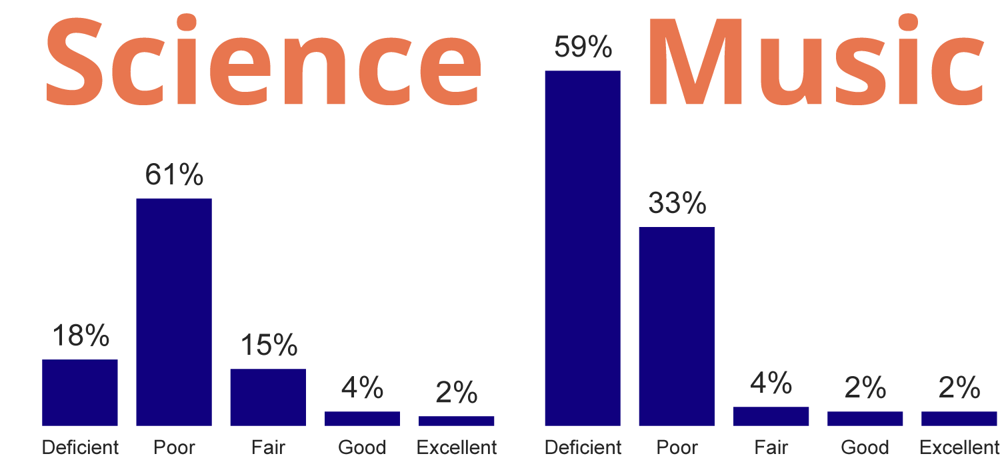

Are Schools at Capcity?
Traditionally, we’ve evaluated space with the Current Use Capacity Model which measures how our classroom space is being utilized today based on the current number of students and programs.
A Comprehensive Understanding of Capacity
The 21st Century
Educational Capacity Model
represents a more
holistic understanding of space needs. It accounts for
additional spaces needed for enrichment program classrooms and specialty areas like science labs and music classrooms.
Program Deficiencies in Boston Schools
Across the BPS system, there's a deficiency in space for these enrichment programs and specialty subjects such as art and music (shown below). Only 21% of Boston schools have 'fair' science learning environments. Over half of schools don't have existing space that can be used for music classes. In certain cases, adding room for these programs can require building expansion.

Which neighborhoods will see the most population growth in the near future?
Demographic analyses indicate that East Boston, Roxbury, Mattapan, and Dorchester
will be the four high-growth neighborhoods for populations less than 18 years
old over the next 10 years.
With this being said, it's important to focus initial building expansions in these four areas. Schools in these four areas were ranked based on their 21st Century Educational Capacity.
Capacity Deficiencies - High-Growth Neighborhoods
Each BPS school was evaluated to understand space deficiencies for these special programs. The spaces of primary importance that were evaluated were:
Classroom (General Education), Teacher Planning, Small Group Science, Special Education : Self-Contained, Special Education : Resource of Small Group, Art Classroom, Music Classroom, Vocations and Technology, Media Center, and Cafeteria.
Each school was then given a environmental ranking based on the evaluation of these types of spaces ranging from 'poor' to 'excellent'.
Moving Forward
As buildings are renovated, these type of charts can be used to determine where to begin renovations and expansions. In order to prepare for the foreseeable future, these buildings in high-growth neighborhoods with poor capacity should be considered high priority.